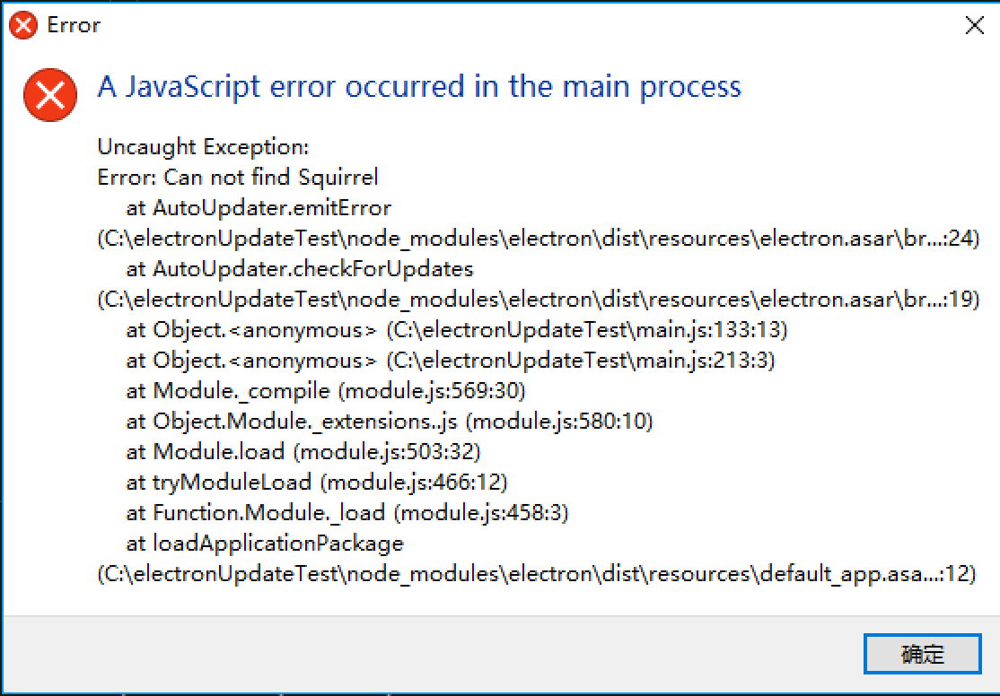

Electron是一款可以使用 JavaScript，HTML 和 CSS构建跨平台桌面应用的框架。但是当用户获取下一个版本的时候，只能下载重新安装一遍下一个版本，十分僵硬，于是我们需要引入一个Electron自动更新的方法。
有多种方法可以更新Electron应用. 最简单并且获得官方支持的方法是利用内置的Squirrel框架和Electron的autoUpdater模块。但是目前autoUpdater只有 macOS 和 Window 支持该功能。在 Linux 上没有对自动更新程序的内置支持。
然而，各种谷歌到的官方文档和博客实在是太坑，感觉讲的都不是很详细，我这里记录汇总并加点自己的观点。
根据官方文档，有两种可以更新的方法：update.electronjs.org和electron-builder。但是官方API例子electron-api-demos使用的是electron-packager。这里我都会做讨论。
平台区别
目前autoUpdater只有 macOS 和 Window 支持该功能。在 Linux 上没有对自动更新程序的内置支持。
macOS
在macOS上, autoUpdater模块建立在 Squirrel.Mac上,也就是说不需要任何别的设置，直接打包就可以用了。
但是需要注意：macOS自动更新一定要签名！！而且一定要使用苹果开发者证书，自己生成的没有用（看别人博客说的，我自己也没试过）
Windows
在 Windows 上实现自动更新是通过 Squirrel.Windows。但它的处理方式与 OSX 完全不同。
与 Squirrel.Mac 不同的点在于：Squirrel.Windows 并不需要一个用于检测新版本的 API 路径，它需要的是一个文件服务器。另外，该 Squirrel 更新器并不内置于 Electron，它是一个第三方依赖。也就是说，你必须把打包的Windows应用生成一个安装程序，安装之后才可以使用！！！直接运行打包好的程序会报错。（Cannot find module 'squirrel'）

打包程序见下文。
Electron-packager
Electron-packager 是一款命令行工具以及Node.js库，可以将Electron的应用程序以及所需代码库打包成各个平台可执行文件。
支持的平台有：
- Windows (32/64 bit)
- OS X (also known as macOS)
- Linux (x86/x86_64)
安装
需要Node.js 4.0 以上
1 | # for use in npm scripts |
非windows平台上面打包windows可执行程序需要先安装Wine，但是按照我个人经验，在Mac上打包一次需要超过半小时（windows虚拟机可能会快点），但是同样的程序在Windows上只需要2分钟
使用
安装好之后直接在命令行输入一下命令就可以：
1 | electron-packager <sourcedir> <appname> --platform=<platform> --arch=<arch> [optional flags...] |
比如我在package.json里面写的就是
1 | "scripts": { |
这样在命令行直接运行
1 | npm run package:win |
就可以打包windows平台的程序了。
生成安装包
生成安装包可以使用electron-winstaller。
electron-winstaller 是一个基于Squirrel的生成Windows安装包的 npm 模块，基本的参数说明可以到它官网上查看，这里我只是写下我自己demo的参数。
1 | //JavaScript |
在使用electron-builder打包之后，通过运行
1 | node ./windowsInstaller.js |
运行这个文件就可以在windows32文件夹下找到名为MyApp.exe的安装包。双击运行就可以自动安装。安装界面如下所示，注意这个方法不能选择安装目录，程序会自动安装到C盘。（可能作者模仿Mac简易的安装方式？
安装过程会运行一个默认的gif动画。

如果之前部署过新版程序在服务器上，双击运行程序，没什么问题应该就会看到这个画面，点击restart 就可以运行最新的程序了。
Electron-builder
electron-builder是一个完整的解决方案，对于Macos、windows、linux下的electron app，它可以提供打包及构建的相关功能。同时，它还提供开箱即用的“自动更新”功能支持。
部署服务器
Hazel – 用于私人或开源应用的更新服务器，可以在 Now 上免费部署。 它从GitHub Releases中拉取更新文件，并且利用 GitHub CDN 的强大性能。
代码
注意开发的时候不要调用这些代码块，可以使用electron-is-dev检查当前的环境
以下代码需要添加到main.js中
1 | //JavaScript |
然后构建更新服务器的URL并且通知autoUpdater:
1 | //JavaScript |
最后，检查更新
1 | //JavaScript |
应用更新
通过autoUpdate的API，可以知道应用更新的状态，然后来通知用户
1 | //JavaScript |
同时要确保错误已经被处理了:
1 | //JavaScript |
https://electronjs.org/docs/tutorial/updates
https://electronjs.org/docs/api/auto-updater
https://github.com/sorrycc/blog/issues/26